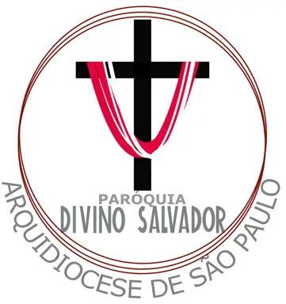
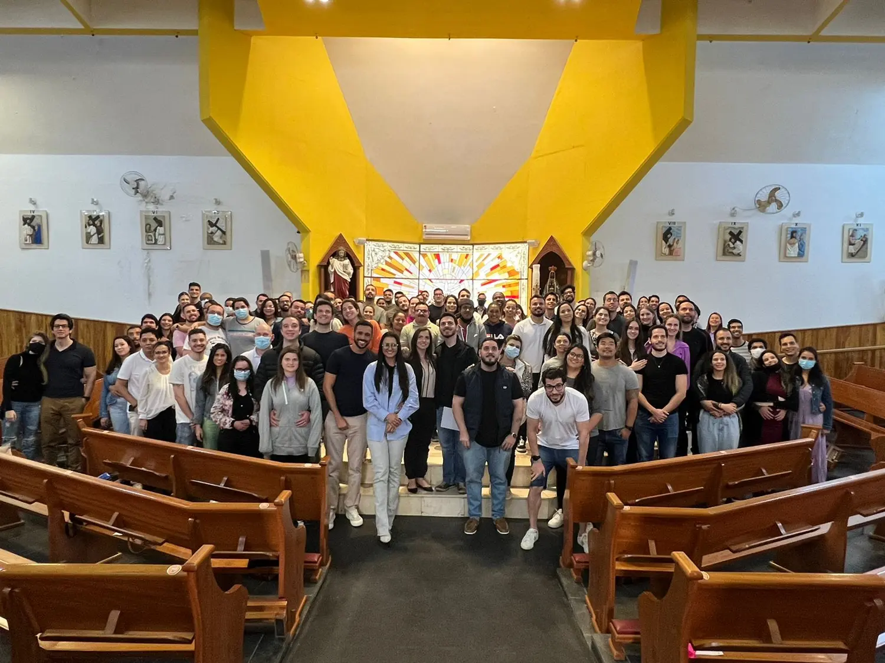
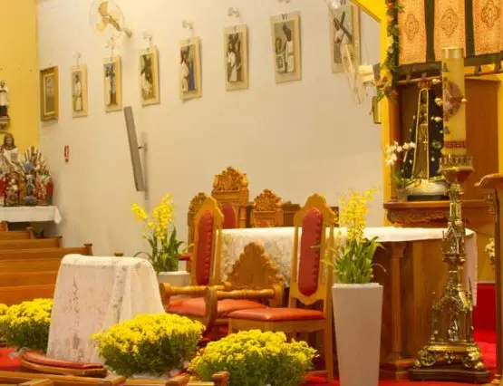
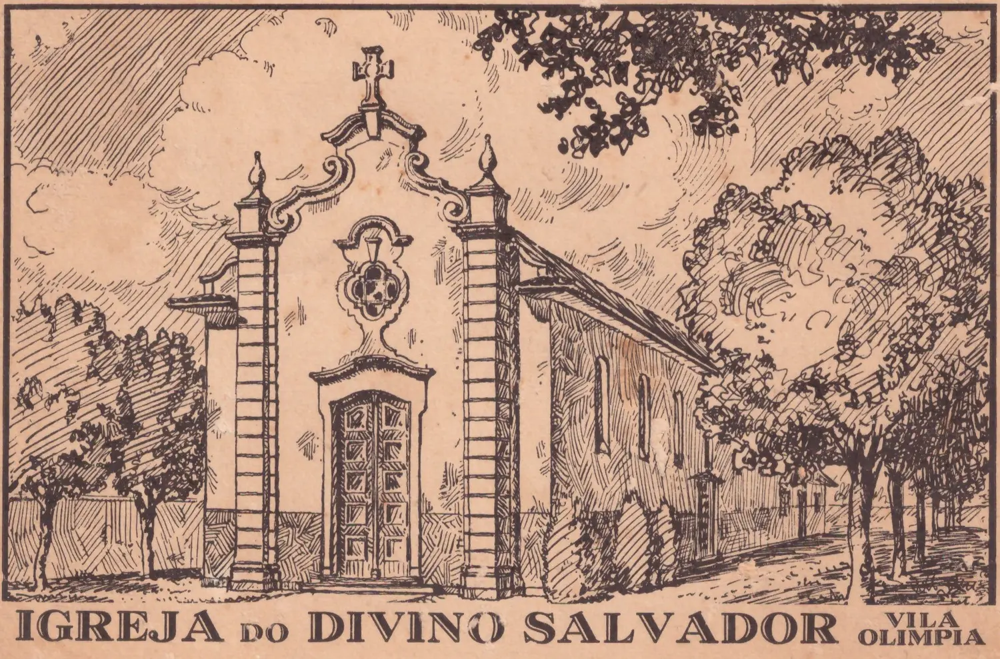
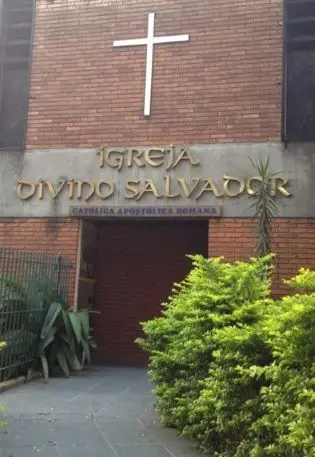
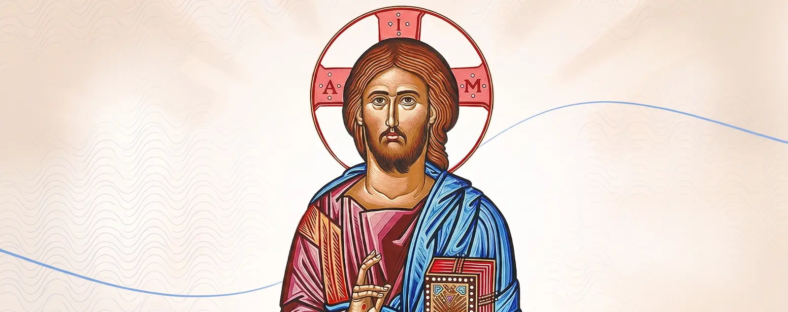

Próximos encontros
Nenhum encontro futuro com data confirmada na agenda consultada.
Consultar a agenda paroquial ↗
Arquidiocese de São PauloRua Casa do Ator, 450
São Paulo

Fora do horário habitual de confissão, procure o padre se estiver disponível ou marque pela secretaria.
Nenhum encontro futuro com data confirmada na agenda consultada.
Consultar a agenda paroquial ↗Em outubro, a Conferência Vicentina registrou a construção de uma casa para uma família assistida. A galeria conserva também os encontros de Corpus Christi e da Festa Junina.
Visitar os álbuns ↗
Para iniciar a preparação ou pedir atendimento, consulte as orientações da paróquia.

Em 25 de outubro, num terreno doado por João Medeiros, começou a história da capela construída pelos padres salvatorianos.
Em 12 de outubro, o cardeal Dom Carlos Carmelo erigiu a paróquia com território de Moema e do Itaim Bibi.
A antiga capela foi demolida em 1973. No fim de 1976 a comunidade já se reunia na nova matriz semicircular. Em 1979, a administração passou do PIME à Arquidiocese.


O nome Jesus quer dizer “Deus salva” (Catecismo, 430). A quem pergunta a quem esta igreja é dedicada, a resposta é o próprio Cristo.
Jesus chama pelo nome o homem que subiu à árvore e vai hospedar-se em sua casa.
Virtude: misericórdia.Como imitá-lo: tome a iniciativa de visitar alguém que os outros evitam.
Durante a ceia, o Mestre se levanta e lava os pés dos discípulos.
Virtude: humildade.Como imitá-lo: assuma hoje um serviço de casa que costuma deixar para outra pessoa.
Rua Casa do Ator, 450 · Vila Olímpia
São Paulo – SP · 04546-001
Segunda, 13h30–18h; terça a sexta, 9h–12h30 e 13h30–18h; sábado, 13h30–17h. O Instagram indica 18h30 de terça a sexta; ligue antes de vir no fim da tarde.
(11) 3848-3300